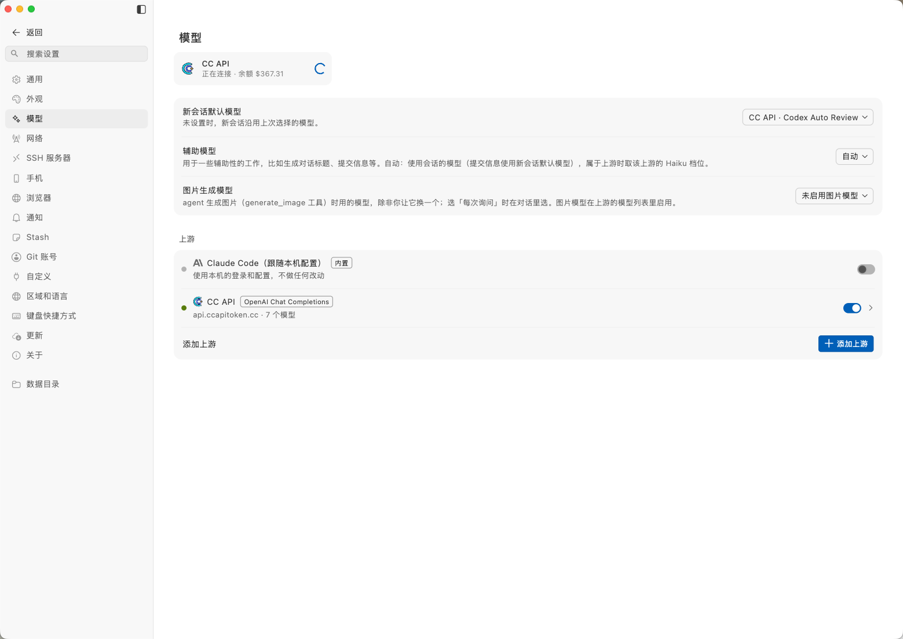
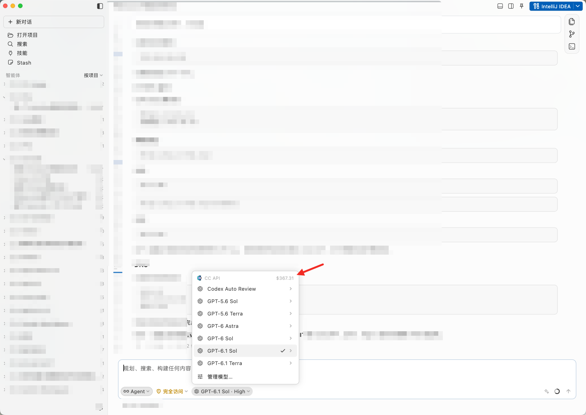
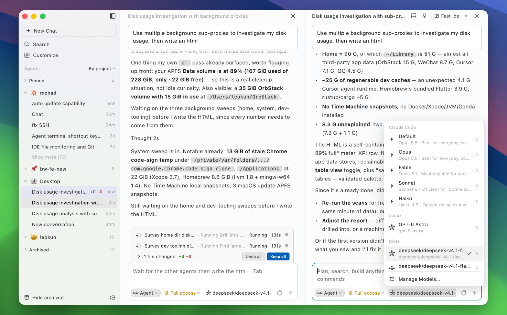

在 CC Api 管理
统一管理模型、账户和余额，查看可用的上游能力。
ONE-CLICK CONNECTION
在模型设置中打开 CC Api，CC Code 会读取可用模型和账户余额。选择模型，直接开始。


FROM API TO WORK
统一管理模型、账户和余额，查看可用的上游能力。
模型设置里一键启用 CC Api，自动同步模型列表和账户状态。
对话、Goal、编辑器、终端和 Git，在一个窗口里持续交付。
THE WORKSPACE
CC Code 使用你已有的 Claude Code、CLAUDE.md、skills、MCP servers 和 hooks。CC Api 负责模型接入，CC Code 负责把上下文变成结果。
了解 CC Api ↗
GET STARTED
当前版本 1.7.0+18